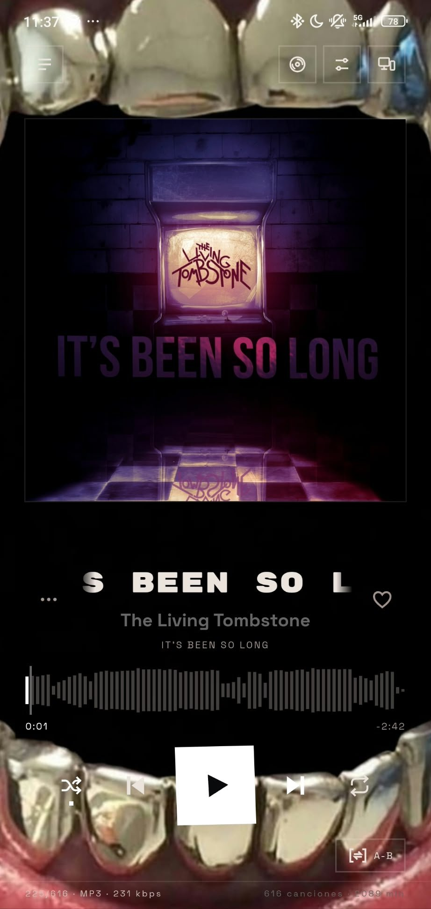

What it does
DJ mode
It analyses every song (tempo, key, energy, choruses) and mixes them at the best moment: bass swaps, filters, loops, tape stops… You pick which ones and how strong.
YouTube and Spotify
Paste a link or search by name, listen to it and download it to have it offline. From Spotify, if you already have the song, yours plays.
Sounds better
Equalizer, bass boost, “Improve sound” for cheap headphones, even volume and smooth endings with no cuts.
Smart shuffle
It plays the song that fits best next and, now and then, a similar one from YouTube. When the playlist ends, it carries on with similar music.
PC and phone together
Scan a code and your playlists, likes and music sync, with no accounts and no cloud. Control from one what plays on the other.
Your way
Themes, colours, background, fonts, icons and effects. In Spanish, English and Catalan. With stats and your own Wrapped.
How it looks




The songs, artists and covers in the PC screenshots and the first two phone ones are made up; the last two are from Kilphys's phone.
Getting started
- Download the installer and open it. Choose the folder, whether you want a desktop icon and whether it opens when the PC starts. If Windows warns you (“Windows protected your PC”), click More info › Run anyway: it happens with any small program without a paid signature. On a Mac, download the .dmg, open it and drag MixUp into Applications (so it updates itself); if macOS warns you, see Is it safe?
- Your music shows up on its own: MixUp reads your Music folder. To add more, drag songs onto the window or look for them with the + button.
- Hit play and, if you like, the disc at the top: DJ mode mixes the next songs by itself.
Rather not install anything? The portable version runs from any folder or a USB stick: your music and settings travel on the stick.
Android app
The same app on your phone: your music, DJ mode, YouTube and the equalizer, with controls in the notification and on the lock screen. It keeps playing with the screen off.
- Download MixUp.apk (with the QR code or the button) and open it. If Android asks, turn on Allow from this source.
- If Play Protect warns you, tap More details › Install anyway: it's because it doesn't come from Google Play.
- To pair it with the PC: on the PC, Settings › This PC › Connect a phone, and scan the code from the app.
Is it safe?
Yes. Windows, macOS and Android may call it “dangerous” because it isn't signed with a paid certificate and doesn't come from a store, not because of what it does. All the code is open on GitHub and GitHub builds the installers from it. It has no accounts and no ads, and it doesn't send your data anywhere.
On a Mac, the first time: right-click MixUp → Open. If it won't let you, go to System Settings → Privacy & Security and press Open Anyway. It's because the app isn't signed with a paid Apple certificate. On macOS 15 or newer the button is in System Settings → Privacy & Security → Open Anyway. To keep it updating itself, move it to the Applications folder.
If you want to check, upload the file to VirusTotal (it runs it through more than 70 antivirus engines).
What's new
Big update · 2.0.2x
Now you switch on only what you use
MixUp has been tailored to you: what you don't use stays off, and what you like you install from the store. And it's now on Mac.
Plugins
DJ mode, In Cover Actions, Optimisation, Connect over Wi-Fi, Real-time lyrics, Sleep timer, Share, Sound enhancer, Artist info, Duplicate songs, Show next song, Your own logo and Bottom bar. Each one switches on or off.
Plugin store
Themes, styles and fonts in two tabs: Installed and Explore. Add what you like with one tap.
Real-time lyrics
Synced lyrics from LRCLIB, word by word, in time with the song.
Cover actions
Tap the cover to play at x2, loop a section and more, without opening menus.
Clearer settings
Normal or advanced mode, and one-tap settings for what you change most.
New styles
Blend, Expressive and Crate, with a new volume control and progress bars.
Much faster YouTube
Searching for a song and starting to hear it takes far less time.
Google Drive
Coming very soon: sync your settings, playlists and Likes between devices with your own Drive.
MixUp for Mac
Apple Silicon and Intel, macOS 11 or newer. Download the .dmg and move it to Applications so it updates itself.
All published versions
The release notes are written in Spanish.
Loading versions…
All versions
You can download any earlier version. Your music, playlists and settings are kept when you switch versions.
| Version | Date | Installer | Portable | Android | macOS |
|---|---|---|---|---|---|
| Loading… | |||||
About

Hi! I'm luckicla and I make MixUp. It started as ZenTor, a player to listen to my music from a USB stick without installing anything, and it has ended up as a full player for PC, Mac and Android.
I made it above all for Kilphys, the person this project exists for. Thanks for everything.
It's free and open source for non-commercial use. If something breaks or you have an idea, tell me on GitHub.
Part of the project was made with the help of AI (Claude, by Anthropic).